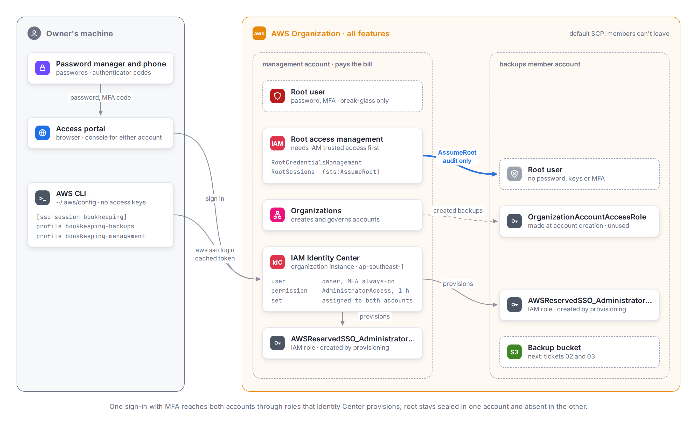

AWS foundation: what ticket 01 taught
Notes from 2026-10-18, written for the owner coming back to this months later. They cover how the AWS pieces relate, how a sign-in reaches an account, and the gotchas the runbook met. Real identifiers live in the password manager and on screen, never here: this repository is public.

../diagrams/aws-access.diagram.html, rendered
with pnpm diagrams.
The pieces
| Term | What it is here |
|---|---|
| Organization | A container for AWS accounts with one bill. Created with all features, which unlocks service control policies (SCPs) and centralized root access; "consolidated billing only" would not. |
| Management account | The old personal account. It pays for everything, owns the Organization, and hosts Identity Center. SCPs never restrict it, so it stays lean. |
| Member account |
backups: a separate blast radius for the S3 bucket,
away from SAA-C03 practice. Its root email is a plus address in
the owner's normal inbox.
|
| Default SCP | Attached when the Organization was created; it stops member accounts leaving the Organization or closing themselves. |
| Trusted access | Permission for one AWS service to act across the Organization. IAM needed it before root access management would work. |
| Centralized root access |
Two features: RootCredentialsManagement (new member
accounts get no root password, keys or MFA) and
RootSessions (the management account can call
sts:AssumeRoot into a member account for one narrow
task, such as an audit).
|
| Root user |
In the management account: kept for break-glass use
only, meaning lockouts and the few root-only tasks. In
backups: absent.
|
| Identity Center instance |
An organization instance, single-Region, in
ap-southeast-1. The Region is permanent; the
multi-Region option would have created a paid KMS key.
|
| Identity Center user | The owner's everyday sign-in, with a password and MFA asked for every time. Its username cannot change, so it names the person, not a role. |
| Permission set |
A template of permissions: AdministratorAccess,
one-hour sessions.
|
| Assignment, provisioning |
Assigning a user and a permission set to an account makes
Identity Center create an IAM role in that account,
AWSReservedSSO_AdministratorAccess_…. Signing in
means assuming that role.
|
| OrganizationAccountAccessRole |
Made when Organizations created backups; lets the
management account assume admin there. Unused, since Identity
Center replaces it.
|
| Access portal |
The Identity Center sign-in page. It has two URLs, an IPv4-only
…awsapps.com/start and a dual-stack
…portal.ap-southeast-1.app.aws; the CLI uses the
first.
|
| sso-session, profile |
In ~/.aws/config, one sso-session
holds the portal URL and Region; each profile picks an account
and role from it. One login serves both profiles.
|
How a sign-in reaches an account
Browser
- Open the access portal; enter the username and password.
- Enter the authenticator code (always asked).
-
Pick an account and
AdministratorAccess; the console opens as the provisioned role, for at most one hour.
CLI
-
aws sso login --sso-session bookkeepingopens the browser; approve thebotocore-client-…request. - The CLI caches a token, then trades it for short-lived role credentials per profile. No access key is ever written to disk.
aws sso login --sso-session bookkeeping
aws sts get-caller-identity --profile bookkeeping-backups
aws sts get-caller-identity --profile bookkeeping-management
aws sso logout
A healthy get-caller-identity shows the expected account
and an Arn containing
AWSReservedSSO_AdministratorAccess.
After a restart or in a new terminal
Nothing lives in the shell, so a restart logs nothing out. Everything is
on disk under ~/.aws:
| What | Where | How long it lasts |
|---|---|---|
| Profiles and the session | ~/.aws/config |
Permanent. |
| SSO token | ~/.aws/sso/cache/ |
An hour per access token, refreshed by the CLI on its own for as long as the Identity Center session lasts: 8 hours, the user interactive sessions setting. |
| Role credentials | ~/.aws/cli/cache/ |
One hour, the permission set's session; fetched again on their own. |
| CLI client registration | ~/.aws/sso/cache/ |
About 90 days; renewed on its own. |
Run aws sso login --sso-session bookkeeping again only when
the 8-hour session has ended, after aws sso logout, or when
a command reports an expired SSO token. In practice: about once a
working day.
Lessons from the run
Order matters: root access before the member account
Accounts created after RootCredentialsManagement is on
are born with no root credentials. Created before, they would need
their root credentials deleted afterwards.
The console turned on less than it looked
After trusted access was enabled, IAM's Root access management page
showed the account tree and no capability choices, as if done.
aws iam list-organizations-features in CloudShell said
[]. The two aws iam enable-organizations-…
commands fixed it. Checking with the API before the next irreversible
step is what caught it.
CloudShell is the read-only tool before profiles exist
It runs as whoever is signed in to the console, with the CLI
installed, so it can check a step long before
aws configure sso has run locally.
Audit a member's root without keeping its credentials
aws sts assume-root with the
IAMAuditRootUserCredentials task policy returns
credentials that can only read root settings. Exporting them inside a
( … ) subshell kept them out of the shell and the screen.
get-login-profile failing with
NoSuchEntity means no root password.
The token cache was readable by everyone
Under WSL, ~/.aws/sso/cache and
~/.aws/cli/cache came out rwxrwxrwx, so any
user on the machine could read the SSO token and the role credentials.
chmod -R go-rwx ~/.aws closes it; check that new cache
files stay rw-------, and look at the shell's
umask if they don't.
Labels that match across apps
Root and portal sign-ins are easy to mix up. Entries named
AWS - root <account> and
AWS - portal <user> in both the password manager
and the authenticator, with each password-manager note naming its
authenticator entry, make the pairing obvious.
Say no to the agent tooling prompt
aws configure sso now ends by offering to set up AWS
skills and an MCP server for AI coding agents. Declined: it changes
agent configuration and hands agents an admin session.
Railway's own backups need the Pro plan
On Hobby the Backups tab can only view, restore and delete. The spec assumed otherwise; the criterion was dropped. Until ticket 04 ships, the re-encrypted 2026-10-17 dump is the only copy outside Railway.
Rotating an age key without plaintext on disk
Re-encrypt in one pipe (age -d … | age -r … -o …), then
compare sha256sum of both decryptions. Copy the key with
clip.exe < key instead of printing it, and test the
password-manager copy by piping the clipboard into
age -d -i -. A second copy can sit in a cloud drive if it
is passphrase-encrypted (age -p) and the passphrase lives
outside the password manager.
Public repo, private identifiers
Account IDs, emails and portal URLs crept into the run log during the session and had to be scrubbed before the first commit. Write placeholders or descriptions in the file from the start.